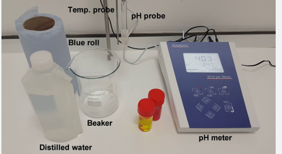
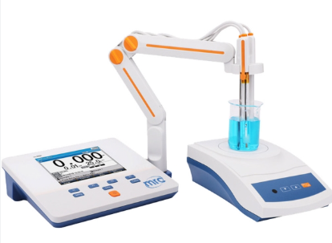
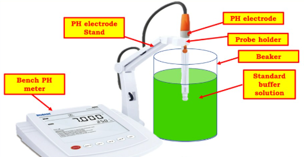
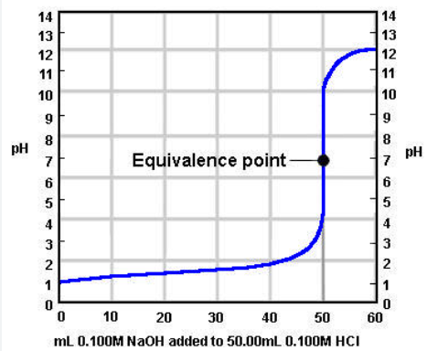

Chemistry Lab Experiments
Interactive learning platform for chemistry students
pH-metric Titration of HCl solution against standard Hydroxide Solution
Aim: To determine the strength of Hydrochloric acid by pH meter.
Step 1: Collect All the materials requires for the experiment.
Audio explanation:
Apparatus: pH meter, electrode, beaker, pipette, burette
Chemicals: Hydrochloric acid (HCI), sodium hydroxide (NaOH) buffer of pH = 4 and 9.2
Step 2: Setting up The pH meter
Audio explanation:
0.1N NaOH solution is provided. HCl solution of unknown strength is provided. Switch on the instrument and wait for 10-15 minutes so that machine gets warmed up Prepare the buffer solution by adding buffer tablets of pH=4 and pH 9.2 in 100 ml of water separately. Wash the electrode with distilled water. Then, dip the electrode in the buffer solution (pH = 4) taken in a beaker, so that the electrode immersed to the solution properly,adjust the pH to 4. Wash the electrode with distilled water and standardize the pH meter using basic buffer solution pH=9.2 .
Step 3: Standardization of pH meter with electronic buffer.

Audio explanation:
Standardization of pH meter can also be done with the help of electronic and buffer which are integral part of the instrument. Output of the electronic buffer 7.00 is joined to the input of pH meter and the asymmetric knob is adjusted till display reads 7.00 . Output of the electronic buffer 4.00 and 9.2 are then joined to the input of pH meter and the asymmetric knob and slope knob are adjusted till display reads 4.00 and 9.2 respectively.
Step 4: pH-metric Titration
Audio explanation:
pH-metric Titration: Clean the electrode with distilled water and wipe them with tissue paper or filter paper. Take 10 mL. of HCl solution in a 100 ml beaker and add small amount of conductivity water so that the electrode is immersed in it. Note down the reading on the pH meter which is the pH of the HCl solution.
--
Set the burette with NaOH solution. Add Iml NaOH solution from the burette, shake the solution well and note the corresponding pH values. Near the end point, there will be a sharp increase in the pH value. Process is continued until at least five readings are taken after the end point
Step 5: Plotting Graph ∆pH/∆V
Audio explanation:
Repeat the experiment to obtain the fine titration value by recording the change in pH for each 0.1 ml of NaOH near the end point or equivalence point Piot a graph of ∆pH/∆V versus volume of NaOH. Thus you have completed your experiment.
Quiz: Test Your Understanding
1.What is the principle of pH metric titration?
2.What is plotted in a pH metric titration curve?
3.Choose the correct option : The equivalence point is the point at which the amount of acid equals the amount of base.
4. Which of the following represents the equivalence point in the graph of pH Vs volume of titrant?
Quiz Results
You scored 0 out of 4 (0%)